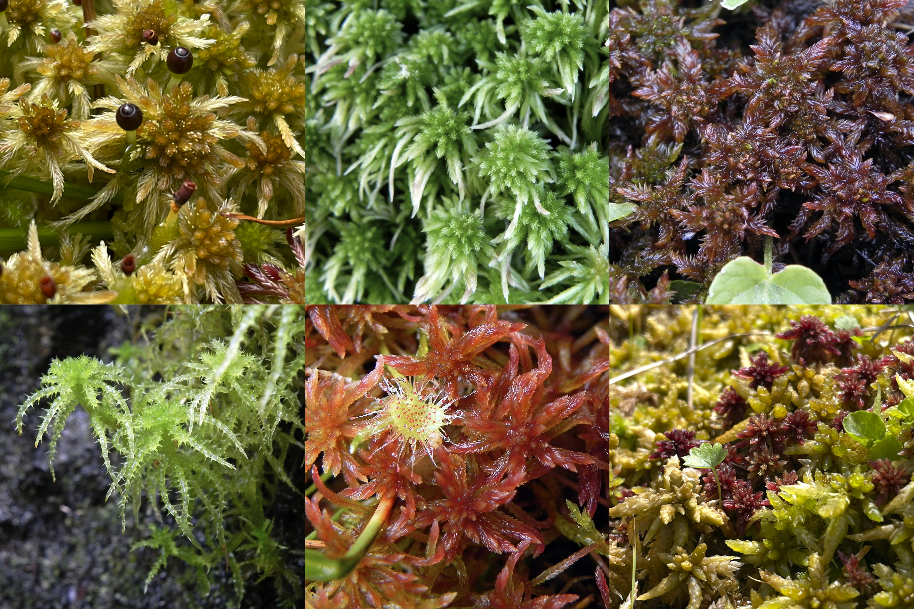
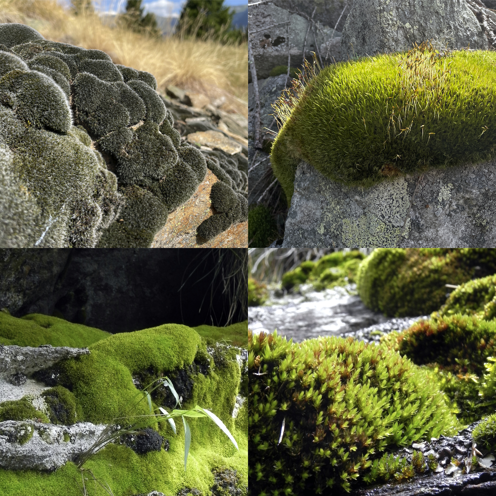
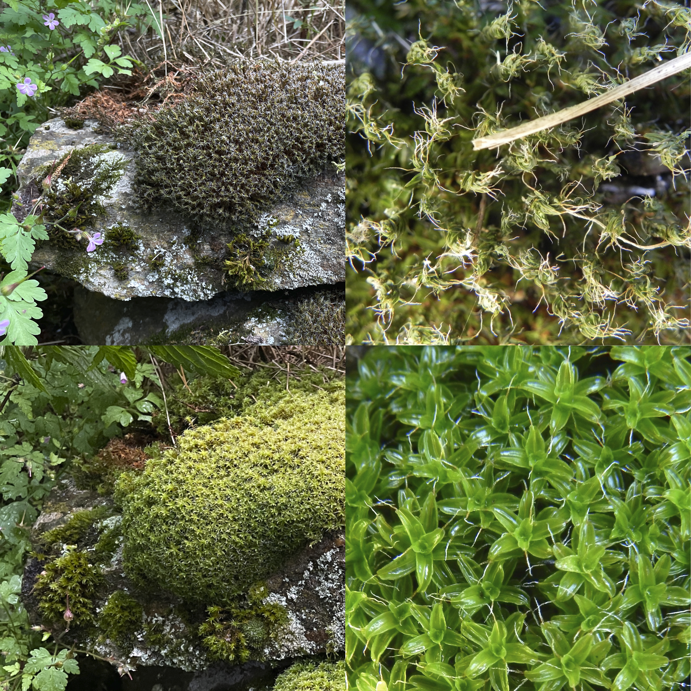

2 Moose
2.1 Einleitung Moose
Moose sind die ursprünglichste Gruppe der Landpflanzen und existieren schon seit über 400 Millionen Jahren. In Ces und der näheren Umgebung gibt es mindestens 213 Arten, 45 gehören zur Klasse der Lebermoose und 168 zu den Laubmoosen, in der Schweiz sind es über 1150 Arten. Die hohe Moosvielfalt in Ces ist nicht zuletzt den Mooren zu verdanken, aber auch auf den meist kalkarmen Felsen und in den Bächen und Wäldern sind die charakteristischen Moos-Gemeinschaften gut ausgebildet, je nach Besonnung und Feuchtigkeit unterscheiden sie sich deutlich.
2.2 Torfmoose

Torfmoose (Gattung Sphagnum) sind wichtige Bestandteile von Mooren und damit weltweit eine bedeutende CO2-Senke. In Ces sind sie in vielen Farben und Formen anzutreffen - auch in Wäldern und auf Felsen, so dass man sie bestaunen kann, ohne die empfindlichen Moorböden zu betreten. Im Bild: Sphagnum angustifolium mit Sporophyten, Sphagnum cf. quinquefarium, Sphagnum subsubsecundum, Sphagnum squarrosum, Sphagnum cf. russowii und Sonnentau, Sphagnum papillosum und Sphagnum cf. rubellum
2.3 Epiphyten

Aufsitzerpflanzen (Epiphyten) kommen nicht nur in tropischen Regenwäldern vor. Auch bei uns sind sie allgegenwärtig. In den Hecken und Kleingehölzen und auf Baumstämmen am Waldrand um Ces wachsen über 40 Moosarten, darunter auch Rogers Goldhaarmoos Orthotrichum rogeri, eine europweit geschützte Smaragdart (im Bild hier besonders üppig die Goldhaarmoose Lewinskya striata und Lewinskya striata auf einer Esche bei Frec). Im Gegensatz zu parasitischen Blütenpflanzen wie der Mistel entziehen Moose ihrem Trägerbaum keine Substanzen und schaden ihm nicht.
2.4 Granit

Mehrere Zentimeter dicke Moospolster sind auf den Felsen rund um Ces keine seltene Erscheinung – sie scheinen oft dutzende wenn nicht hunderte von Jahren alt zu sein. Unter Felsüberhängen wächst zum Beispiel das Grosse Kluftmoos Amphidium mougeotii, auf sonnigen Felsen die schwärzliche Grimmia alpestris, im Halbschatten Dicranum scoparium (hier mit Sporophyten), auf überrieselten Felsen Bryum mildeanum – nebst unzähligen anderen Arten.
2.5 Trockenschlaf

Das Land-Schraubenmoos, Syntrichia ruralis, besiedelt viele Mauern und Ruinen im Dorfkern, wo es dicke Polster bildet. Bei Trockenheit wirken diese silbergrau wie das Gestein auf dem sie wachsen, nach Regen oder im Nebel sind sie kaum mehr zu erkennen. Erst jetzt kommt die grüne Farbe zur Geltung, der vorher völlig eingestellte Stoffwechsel kommt wieder in Fahrt, die eingerollten Blättchen breiten sich aus.
2.6 Gebirgsbach

In den mal reissend schnellen, mal sanft plätschernden Bächen um Ces wächst die typische Flora von kalkarmen Gebirgsbächen. Auch die ständig feuchten und oft beschatteten Ufer bilden einen idealen Lebensraum für eine grosse Zahl unterschiedlichster Moosarten. Es lohnt sich also bei der Dusche unter dem Wasserfall oder dem Bad in einem Felsbecken auch mal die Felsen genauer anzuschauen!
2.7 Nordisches Prachtmoos

Im hinteren Weiher bei Lempence lebt das Nordische Prachtmoos, Calliergon richardsonii, eine Rarität die in der Schweiz nicht von vielen Fundorten bekannt ist, im Tessin sonst nur noch vom Bleniotal. Das Moos ist sich eine amphibische Lebensweise gewöhnt, es lebt oft untergetaucht, erträgt aber auch das periodische Austrocknen des Tümpels offenbar gut.
2.8 Fundmeldungen
2.9 Artenliste
Abietinella abietina (Hedw.) M.Fleisch., Amblystegium serpens (Hedw.) Schimp., Amphidium mougeotii (Schimp.) Schimp., Andreaea rupestris Hedw., Anoectangium aestivum (Hedw.) Mitt., Atrichum sp., Atrichum undulatum (Hedw.) P.Beauv., Aulacomnium palustre (Hedw.) Schwägr., Barbilophozia attenuata (Mart.) Loeske, Barbilophozia barbata (Schreb.) Loeske, Barbilophozia hatcheri (A.Evans) Loeske, Barbilophozia lycopodioides (Wallr.) Loeske, Bartramia halleriana Hedw., Bartramia ithyphylla Brid., Bartramia ithyphylla subsp. ithyphylla, Bazzania tricrenata (Wahlenb.) Lindb., Blepharostoma trichophyllum subsp. trichophyllum, Blepharostoma trichophyllum (L.) Dumort., Blindia acuta (Hedw.) Bruch & Schimp., Brachytheciastrum velutinum (Hedw.) Ignatov & Huttunen, Brachythecium albicans (Hedw.) Schimp., Brachythecium cf. rutabulum (Hedw.) Schimp., Brachythecium rivulare Schimp., Brachythecium rivulare aggr., Brachythecium rutabulum (Hedw.) Schimp., Brachythecium salebrosum (F.Weber & D.Mohr) Schimp., nom. cons., Bryum alpinum With., Bryum argenteum Hedw., Bryum capillare Hedw., Bryum capillare aggr., Bryum elegans Nees, Bryum mildeanum Jur. (VU), Bryum moravicum Podp., Bryum pallescens Schwägr., nom. cons., Bryum pseudotriquetrum (Hedw.) G.Gaertn. & al., Bryum subapiculatum aggr., Buxbaumia viridis (Lam. & DC.) Moug. & Nestl., Calliergon richardsonii (Mitt.) Kindb. (EN), Calliergonella cuspidata (Hedw.) Loeske, Calypogeia azurea Stotler & Crotz, Calypogeia fissa (L.) Raddi, Calypogeia integristipula Steph., Campylium stellatum subsp. protensum (Brid.) C.E.O.Jensen, Campylium stellatum (Hedw.) Lange & C.E.O.Jensen, Campylopus atrovirens De Not., Cephalozia bicuspidata (L.) Dumort., Cephalozia lunulifolia (Dumort.) Dumort., Cephaloziella divaricata (Sm.) Schiffn., Ceratodon purpureus aggr., Ceratodon purpureus (Hedw.) Brid., Chiloscyphus polyanthos (L.) Corda, Cirriphyllum piliferum (Hedw.) Grout, Climacium dendroides (Hedw.) F.Weber & D.Mohr, Conocephalum conicum aggr., Conocephalum conicum (L.) Dumort., Conocephalum salebrosum Szweyk. & al., Ctenidium molluscum (Hedw.) Mitt., Cynodontium gracilescens (F.Weber & D.Mohr) Schimp., Cynodontium polycarpon aggr., Cynodontium polycarpon (Hedw.) Schimp., Cynodontium strumiferum (Hedw.) Lindb., Dicranella heteromalla (Hedw.) Schimp., Dicranella sp., Dicranodontium denudatum (Brid.) E.Britton, Dicranum majus Sm. (NT), Dicranum montanum Hedw., Dicranum scoparium Hedw., Didymodon rigidulus Hedw., Diphyscium foliosum (Hedw.) D.Mohr, Diplophyllum albicans (L.) Dumort., Diplophyllum obtusifolium (Hook.) Dumort. (NT), Diplophyllum taxifolium (Wahlenb.) Dumort., Encalypta ciliata Hedw., Encalypta streptocarpa Hedw., Eurhynchium angustirete (Broth.) T.J.Kop., Fissidens gymnandrus Buse (NT), Fissidens osmundoides Hedw., Frullania dilatata (L.) Dumort., Grimmia alpestris (F.Weber & D.Mohr) Schleich., Grimmia anomala Schimp., Grimmia donniana Sm., Grimmia hartmanii Schimp., Grimmia longirostris Hook., Grimmia sessitana De Not., Gymnomitrion concinnatum (Lightf.) Corda, Hedwigia ciliata (Hedw.) P.Beauv., Herzogiella seligeri (Brid.) Z.Iwats., Herzogiella striatella (Brid.) Z.Iwats., Heterocladiella dimorpha (Brid.) Ignatov & Fedosov, Heterocladium heteropterum (Brid.) Schimp., Homomallium incurvatum (Brid.) Loeske, Hookeria lucens (Hedw.) Sm. (NT), Hylocomiadelphus triquetrus (Hedw.) Ochyra & Stebel, Hylocomiastrum pyrenaicum (Spruce) M.Fleisch., Hylocomium splendens (Hedw.) Schimp., Hymenoloma crispulum (Hedw.) Ochyra, Hypnum cupressiforme aggr., Isothecium alopecuroides (Dubois) Isov., Lejeunea cavifolia (Ehrh.) Lindb., Lepidozia reptans (L.) Dumort., Lescuraea incurvata (Hedw.) E.Lawton, Lescuraea saxicola (Schimp.) Molendo, Leucobryum glaucum aggr., Lewinskya rupestris (Schwägr.) F.Lara & al., Lewinskya sp., Lewinskya speciosa (Nees) F.Lara & al., Lewinskya striata (Hedw.) F.Lara & al., Lophocolea heterophylla (Schrad.) Dumort., Lophocolea minor Nees, Lophozia silvicola H.Buch, Lophozia ventricosa aggr., Lophozia ventricosa (Dicks.) Dumort., Marsupella aquatica (Lindenb.) Schiffn. (NT), Mesoptychia bantriensis (Hook.) L.Söderstr. & Váňa, Metzgeria conjugata Lindb., Metzgeria furcata (L.) Corda, Mnium lycopodioides Schwägr., Mnium spinosum (Voit) Schwägr., Neckera complanata (Hedw.) Huebener, Orthothecium intricatum (Hartm.) Schimp., Orthotrichum anomalum Hedw., Orthotrichum cf. schimperi Hammar, Orthotrichum cf. tenellum Bruch ex Brid., Orthotrichum diaphanum Brid., Orthotrichum pallens Brid., Orthotrichum pumilum Sw. ex anon., Orthotrichum rogeri Brid., Orthotrichum sp., Orthotrichum stramineum Brid., Orthotrichum tenellum Brid., Oxystegus daldinianus (De Not.) Köckinger & al., Oxystegus tenuirostris (Hook. & Taylor) A.J.E.Sm., Paraleucobryum longifolium (Hedw.) Loeske, Pellia epiphylla (L.) Corda, Pellia neesiana (Gottsche) Limpr., Pellia sp., Philonotis fontana (Hedw.) Brid., Philonotis seriata Mitt., Philonotis tomentella Molendo, Plagiobryum zieri (Hedw.) Lindb. (NT), Plagiochila asplenioides (L.) Dumort., Plagiochila porelloides (Nees) Lindenb., Plagiomnium affine aggr., Plagiomnium affine (Funck) T.J.Kop., Plagiomnium cuspidatum (Hedw.) T.J.Kop., Plagiothecium cavifolium (Brid.) Z.Iwats., Plagiothecium curvifolium Limpr., Plagiothecium denticulatum (Hedw.) Schimp., Plagiothecium laetum aggr., Plagiothecium platyphyllum Mönk., Plagiothecium tenue (Jedl.) G.J.Wolski & W.R.Buck, Plagiothecium undulatum (Hedw.) Schimp., Platydictya jungermannioides (Brid.) H.A.Crum, Platygyrium repens (Brid.) Schimp., Platyhypnum duriusculum (De Not.) Ochyra, Pleurozium schreberi (Brid.) Mitt., Pohlia annotina (Hedw.) Lindb., Pohlia cruda (Hedw.) Lindb., Pohlia nutans (Hedw.) Lindb., Pohlia wahlenbergii (F.Weber & D.Mohr) A.L.Andrews, Polytrichum aloides Hedw., Polytrichum alpinum Hedw., Polytrichum commune subsp. commune, Polytrichum commune subsp. perigoniale (Michx.) Kindb., Polytrichum formosum Hedw., Polytrichum formosum aggr., Polytrichum juniperinum Hedw., Polytrichum piliferum Hedw., Polytrichum strictum Brid., Polytrichum urnigerum Hedw., Pseudocampylium radicale (P.Beauv.) Vanderp. & Hedenäs (VU), Pseudoleskeella nervosa (Brid.) Nyholm, Pterigynandrum filiforme Hedw., Ptilidium ciliare aggr., Ptilidium ciliare (L.) Hampe, Ptilium crista-castrensis (Hedw.) De Not., Pulvigera lyellii (Hook. & Taylor) Plášek & al., Racomitrium aciculare (Hedw.) Brid., Racomitrium affine (F.Weber & D.Mohr) Lindb., Racomitrium aquaticum (Schrad.) Brid., Racomitrium canescens aggr., Racomitrium canescens subsp. canescens, Racomitrium elongatum Frisvoll, Racomitrium heterostichum aggr., Racomitrium macounii Kindb., Radula complanata subsp. complanata, Radula complanata (L.) Dumort., Rhabdoweisia fugax (Hedw.) Bruch & Schimp., Rhizomnium punctatum (Hedw.) T.J.Kop., Rhodobryum roseum (Hedw.) Limpr., Rhynchostegium riparioides (Hedw.) Cardot, Rhytidiadelphus squarrosus aggr., Rhytidiadelphus squarrosus (Hedw.) Warnst., Rhytidiadelphus subpinnatus (Lindb.) T.J.Kop., Rhytidium rugosum (Hedw.) Kindb., Riccardia cf. chamedryfolia (With.) Grolle (VU), Riccardia chamedryfolia (With.) Grolle (VU), Riccardia palmata (Hedw.) Carruth., Sanionia uncinata (Hedw.) Loeske, Sarmentypnum exannulatum (Schimp.) Hedenäs, Sarmentypnum sarmentosum (Wahlenb.) Tuom. & T.J.Kop., Scapania cf. mucronata H.Buch, Scapania nemorea subsp. nemorea, Scapania nemorea (L.) Grolle, Scapania undulata (L.) Dumort., Schistidium apocarpum (Hedw.) Bruch & Schimp., Schistidium papillosum Culm., Schistochilopsis incisa (Schrad.) Konstant., Sciuro-Hypnum plumosum (Hedw.) Ignatov & Huttunen, nom. cons., Sciuro-Hypnum populeum (Hedw.) Ignatov & Huttunen, Sciuro-Hypnum reflexum (Starke) Ignatov & Huttunen, Sciuro-Hypnum starkei (Brid.) Ignatov & Huttunen, Solenostoma obovatum (Nees) C.Massal., Sphagnum angustifolium (Russow) C.E.O.Jensen (NT), Sphagnum capillifolium (Ehrh.) Hedw. (NT), Sphagnum fallax (H.Klinggr.) H.Klinggr. (NT), Sphagnum girgensohnii Russow, Sphagnum medium Limpr. (NT), Sphagnum palustre L., Sphagnum platyphyllum (Braithw.) Warnst. (NT), Sphagnum quinquefarium (Braithw.) Warnst., Sphagnum russowii Warnst., Sphagnum squarrosum Crome, Sphagnum subsecundum Nees, Sphagnum tenellum (Brid.) Brid. (NT), Sphenolobus minutus (D.Crantz) Berggr., Stereodon pratensis (Spruce) Warnst. (NT), Straminergon stramineum (Brid.) Hedenäs, Syntrichia calcicola J.J.Amann, Syntrichia norvegica F.Weber, Syntrichia papillosa (Wilson) Jur., Syntrichia ruralis aggr., Syntrichia ruralis (Hedw.) F.Weber & D.Mohr, Tetraphis pellucida Hedw., Thuidium assimile (Mitt.) A.Jaeger, Thuidium delicatulum (Hedw.) Schimp., Thuidium tamariscinum (Hedw.) Schimp., Tortella tortuosa (Hedw.) Limpr., Trichodon cylindricus (Hedw.) Schimp., Tritomaria exsecta (Schmidel) Loeske